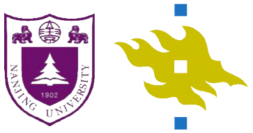

Background
Education
Nanjing University and the University of Helsinki
Nanjing-Helsinki Institute in Atmospheric and Earth System Sciences
Undergraduate dual-degree program in atmospheric sciences
Overall GPA: 4.51/5.00
September 2023 – July 2027 (expected)

Selected coursework
- Mathematics and statistics
- Mathematical Analysis, Higher Algebra, Abstract Algebra, Lie Groups and Lie Algebras, Probability Theory and Mathematical Statistics, Ordinary Differential Equations, Estimates in Partial Differential Equations, Several Complex Variables and Complex Geometry
- Physics
- Mathematical Methods of Physics, Fluid Mechanics, Magnetohydrodynamics, Quantum Mechanics
- Atmospheric science
- Synoptic Meteorology, Dynamic Meteorology, Numerical Weather Prediction, Radar and Satellite Meteorology, Fundamentals of Climatology, General Circulation of the Atmosphere, Aerosol Physics
- Earth and planetary sciences
- Introduction to Earth System Science, Remote Sensing of Terrestrial Parameters, A Step into Astronomy, Fundamental Planetary Sciences (audit)
- Scientific computing
- Scientific Computing I and II, Data Structures and Algorithms, Introduction to Machine Learning for Atmospheric Sciences, Numerical Methods for Partial Differential Equations
Additional study in statistical mechanics and functional analysis.
Selected honors and awards
- Outstanding Presentation, 2nd Future Atmospheric Science Forum (2026)
- Outstanding Paper Award, 2026 China Planetary Science Conference
- Finalist, 2024 Mathematical Contest in Modeling (MCM), top 2% of teams worldwide
- National Scholarship, Chinese government merit award for outstanding undergraduates (awarded to about 2% of NJU undergraduates)
- People’s Scholarship (First Class), NJU merit award with a 5% quota per school
- Excellent Student of Nanjing University, university honor with a 5% nomination quota
Skills
- Programming
- Python (PyTorch, NumPy, SciPy, Matplotlib, xarray for NetCDF data), MATLAB, Mathematica, LaTeX
- Computing
- CUDA / GPU-accelerated scientific computing, numerical PDE solvers
- Languages
- Chinese (Mandarin and Cantonese), English
Campus service and outreach
-
Officer
Great Astronomy Fans Association (GAFA), NJU Suzhou Campus
August 2024 – August 2026 -
Academic representative
2023 cohort, Nanjing-Helsinki Institute
September 2024 – present -
Science outreach volunteer
Jiangsu Science and Technology Museum
October 2023 – January 2024 -
Student delegate
28th Student Congress of Nanjing University
October 2024 -
Secretary-General
Comic, Animation and Cosplay Club, NJU Suzhou Campus
August 2025 – August 2026 -
Member
Student Club Management Department, NJU Suzhou Campus
September 2024 – June 2025